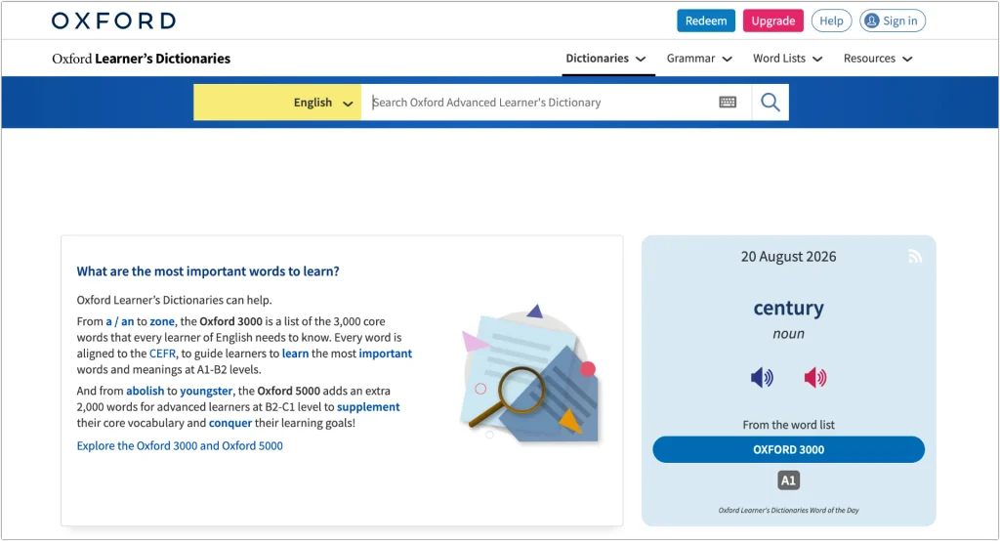
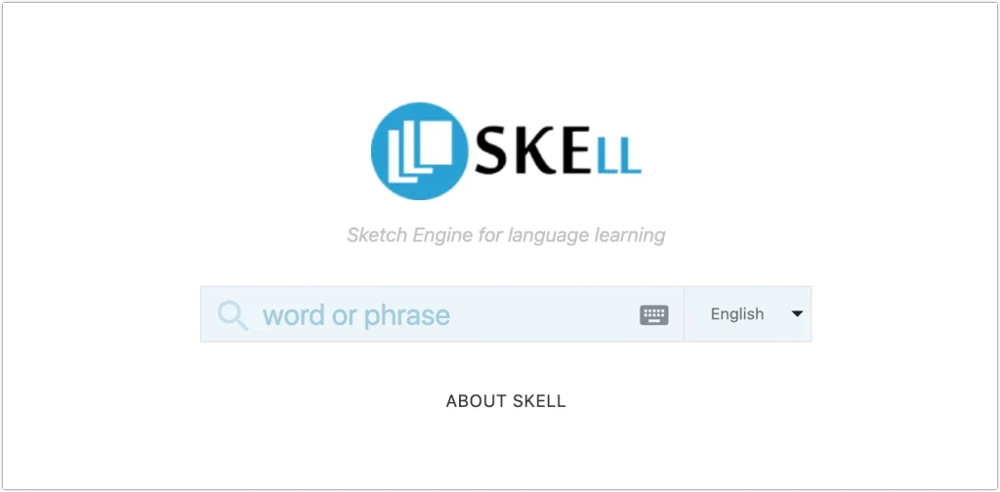
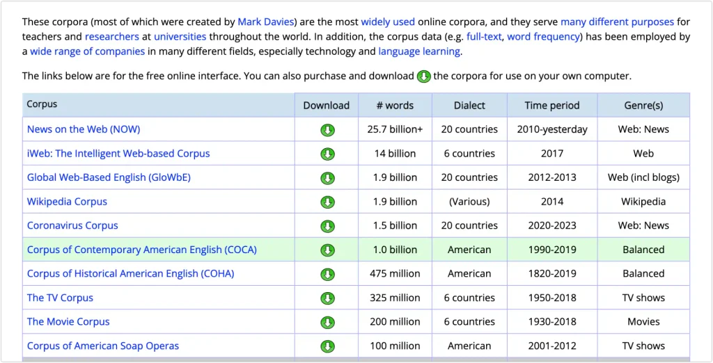
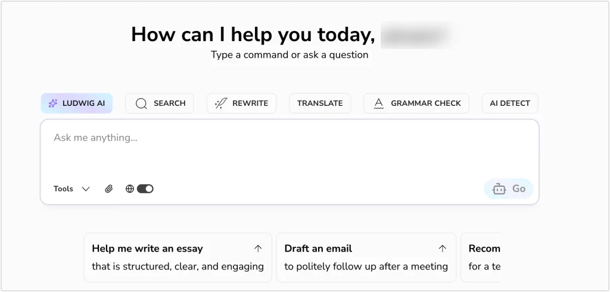
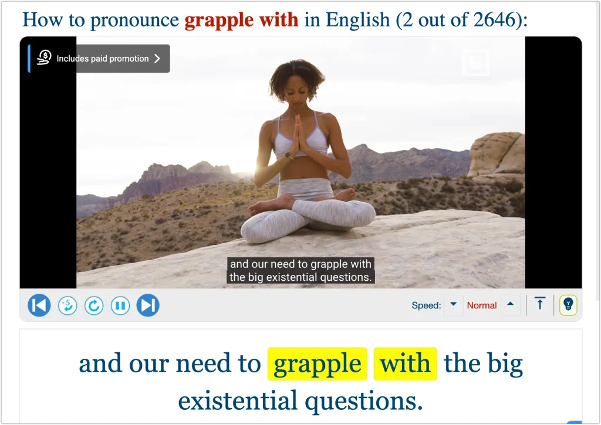

Using ChatGPT to check grammar is fast and useful — but knowing whether the correction is actually better takes a specific process. This guide covers how to use ChatGPT as a grammar checker without blindly accepting every suggestion. The method focuses on five checks: meaning, grammar, collocation, register, and real usage.
Key Takeaways
- ChatGPT can miss collocations: “seriously criticized” may need checking against “sharply” or “heavily criticized”
- A rewrite that sounds more natural can quietly change your meaning — check certainty, sentiment, and agency first
- Use Google for existence checks; use COCA or SKELL for frequency comparisons
Can ChatGPT Check Grammar? (And How Accurate Is It?)
Yes. ChatGPT can help identify common problems with tense, articles, subject-verb agreement, punctuation, prepositions, and sentence structure.
The problem begins when a sentence is already grammatically possible.
Consider:
The company realized significant growth last year.
The sentence is understandable, but in business and financial writing it is worth comparing realize growth with combinations such as post growth, report growth, and achieve growth.
The question is no longer just:
Is this grammatically correct?
It becomes:
Is this the word combination writers normally choose for this meaning and context?
That is a collocation question. ChatGPT can suggest alternatives, but those suggestions still need evidence.
A better question to keep in mind throughout this process is:
Don’t ask “Is this English correct?” Ask what kind of evidence would prove it.
3 Types of AI English That Look Correct but Need Checking
1. The Grammar Works, but the Collocation Feels Off
Consider:
The policy has been seriously criticized by economists.
Every word makes sense, but if this is intended as news English, it is worth comparing seriously criticized with alternatives such as sharply criticized, heavily criticized, and widely criticized.
The goal is not to declare the first phrase wrong immediately. You want to find out which combination best matches the intended meaning and register.
2. The Sentence Sounds Better but Changes the Meaning
Suppose your original sentence means:
This policy may affect small businesses.
ChatGPT rewrites it as:
The policy is likely to place a heavy burden on small businesses.
The rewrite sounds polished, but it also says more.
| Meaning Element | Original | AI Rewrite |
|---|---|---|
| Certainty | may | likely |
| Impact | affect | place a heavy burden on |
| Sentiment | relatively neutral | clearly negative |
| Strength | unspecified | strong |
This is meaning drift. AI has not simply improved the English. It has added interpretation.
3. The English Is Natural, but the Register Is Wrong
The same idea can be expressed differently depending on where it appears.
In conversation:
Things got worse.
In news writing:
Conditions worsened.
Or:
The situation deteriorated.
All three can work. The difference is register.
That is why a useful grammar-checking prompt should always tell ChatGPT where the sentence will be used: conversation, a business email, an academic paper, a news article, marketing copy, or something else.
How to Use ChatGPT to Check Grammar: A 6-Step Process
Here is the prompt I use when I want more than basic proofreading:
The Best ChatGPT Prompt for Grammar Checking
Please check the English below, but do not evaluate grammar alone.
- Explain exactly what the English sentence means.
- Compare it with my original meaning.
- Flag any change in certainty, intensity, sentiment, time, or agency.
- Identify possible grammar errors.
- Identify collocations worth checking, especially verbs, adverbs, adjectives, and prepositions.
- Check whether the wording fits the specified register.
- Suggest a more natural version if necessary.
- For every change, label it as a grammar correction, meaning correction, collocation improvement, register improvement, or optional style change.
- If you are unsure whether an expression is common, say that it needs external verification instead of guessing.
Original meaning: [paste here]
English: [paste here]
Context: [conversation / news / academic writing / business email / marketing copy]
The most useful part is not the rewrite. It is knowing why something was changed.
Step 1: Check Whether the Meaning Changed
Before checking vocabulary or style, make sure the English still says what you wanted to say.
This matters especially when you ask ChatGPT to “make this more professional,” “make this sound native,” or “use more advanced vocabulary.” These instructions can encourage a more aggressive rewrite.
I like to check five things:
| Check | What to Look For |
|---|---|
| Certainty | may → will, could → likely |
| Degree | affect → severely damage |
| Sentiment | neutral → positive or negative |
| Time | temporary → permanent, present → future |
| Agency | who is actually doing the action? |
You can also ask ChatGPT to translate its rewritten sentence back literally:
Translate this English sentence back into your native language as literally as possible. Do not improve or paraphrase it. Tell me only what the English itself means.
A back translation is useful for catching obvious changes, but it should not be your only check because you are still asking AI to evaluate AI.
Step 2: Check the Dictionary Meaning First
Before searching the phrase on Google, confirm that the suspicious word actually has the meaning ChatGPT claims.
A learner’s dictionary is useful because it can show definitions, grammatical patterns, example sentences, and usage labels. I usually start with Oxford Learner’s Dictionaries.

This helps separate two questions that learners often mix together:
Does this word have the meaning I need?
and:
Do English speakers normally combine it with this other word?
Check meaning first. Then move to collocation.
Step 3: Find the Suspicious Collocation
Do not search the whole sentence. Isolate the smallest part that feels uncertain.
Pay particular attention to verb + noun, adjective + noun, adverb + verb, and preposition patterns.
| Phrase to Check | Possible Issue |
|---|---|
| conduct a research | noun pattern |
| realize growth | verb + noun |
| seriously criticized | adverb + verb |
| focus at | preposition |
| responsible to the result | adjective + preposition |
Here, conduct a research is intentionally included as an incorrect example. In standard English, research is usually uncountable in this meaning, so the normal form is conduct research or carry out research.
This is where many AI-generated sentences become difficult to judge. Every individual word can look familiar while the combination itself is wrong or unusual.
Step 4: Use Google to Find Examples, Not to Measure Frequency
Once you have isolated the suspicious phrase, search it in quotation marks.
For example:
“seriously criticized”
Then compare it with alternatives such as:
“sharply criticized”
“heavily criticized”
Quotation marks help you find the exact combination, but finding more Google results does not automatically mean one expression is more natural or more common.
Google is better for answering:
Is this phrase actually used in real English?
Then look at who is using it and in what context. Give more weight to established newspapers, universities, government websites, books, and professionally edited publications. Be more cautious with anonymous content sites, copied example pages, and low-quality AI-generated articles.
If you are checking news English, narrow the search:
site:reuters.com “sharply criticized”
Open the actual article instead of judging the phrase from the search snippet. Check the surrounding sentence, whether the phrase comes from the journalist or a quotation, and whether the context matches what you are trying to write.
A useful rule is:
Use Google to find evidence. Use a corpus to compare frequency.
Step 5: Compare Collocations and Frequency
Do not test only one expression.
Instead of asking:
Is trigger concerns natural?
compare several alternatives:
- trigger concerns
- raise concerns
- spark concerns
- fuel concerns
This is a simple minimal pair comparison: keep as much of the meaning and structure the same as possible while changing the part you want to test.
For a quick collocation check, SKELL is one of the easiest tools to start with. It lets you explore example sentences and common word combinations without requiring much corpus experience.

If you need more detailed frequency or register information, use English-Corpora.org, which includes COCA, NOW Corpus, and iWeb.

| Tool | Best For |
|---|---|
| COCA | Contemporary American English across registers |
| NOW Corpus | News and online journalism |
| iWeb | Broad web English |
| SKELL | Quick collocation and pattern checking |
Another useful option is Ludwig, especially when you want to see complete sentence examples and compare how expressions are used in edited English.

When comparing frequency, keep the comparison as controlled as possible. If you want to know which phrase is more typical in news English, compare the alternatives within the same news corpus rather than comparing numbers from different databases.
Frequency also does not automatically tell you which phrase is best. Widely criticized and sharply criticized may both be common, but they do not mean exactly the same thing. One describes breadth; the other can describe intensity.
The goal is:
common pattern + correct meaning + appropriate register
Step 6: Make the Final Judgment
After checking the evidence, classify the AI suggestion.
A — Natural and well supported
The expression has the intended meaning, appears in reliable sources, and fits the target register.
B — Correct, but ChatGPT overstated the claim
The phrase exists, but ChatGPT says something too strong, such as:
“Native speakers usually say this.”
or:
“These expressions are interchangeable.”
The wording may be fine. The explanation is what needs caution.
C — Grammatically possible, but less typical
The sentence is understandable and grammatical, but another collocation appears to be more established in the target context.
D — Cannot verify
Reliable evidence is difficult to find. In that case, I would not memorize or publish the expression based only on ChatGPT’s explanation.
This four-level system is more useful than reducing everything to simply “right” or “wrong.” A phrase can be grammatically possible while still being uncommon, context-dependent, or less natural than another option.
Match the tool to the question.
How to Check If English Sounds Natural in Conversation
Written English is only half of the problem. A phrase can appear in formal writing and still sound unusual in everyday speech.
For this, YouGlish is useful because it lets you hear words and phrases inside real video clips.

Suppose you are unsure about:
I highly recommend you to try it.
Instead of checking only that complete sentence, compare patterns such as highly recommend, recommend you to, recommend that you, and recommend trying.
Listen to several examples and pay attention to what usually comes after the verb, how formal the phrase sounds, and whether the same pattern appears across different speakers.
Use YouGlish as spoken-context evidence, not as a precise frequency tool. Seeing or hearing more clips does not automatically prove that one construction is statistically more common.
This is especially useful when checking English for conversation, presentations, interviews, and speaking practice.
A Full Example: Checking One AI Sentence
Consider:
The government’s decision has triggered widespread concerns among investors.
The sentence looks grammatically fine, so instead of immediately replacing triggered, run the six checks.
First, confirm the meaning. If the original simply means that the decision caused concern among investors, the meaning is broadly preserved. Next, check whether trigger can carry the intended meaning. Then isolate the collocation trigger concerns and search for real examples.
After that, compare it with alternatives such as raise concerns, spark concerns, and fuel concerns. Use Google to see how these expressions appear in real articles, then use SKELL or a relevant corpus if you need to compare how established the patterns are.
The final conclusion should not automatically be:
Trigger concerns is wrong.
A more careful judgment might be:
The sentence is grammatically acceptable, but raise concerns, spark concerns, or fuel concerns may be more typical depending on the context.
Possible revisions include:
The government’s decision has raised concerns among investors.
or:
The government’s decision has fuelled concerns among investors.
The point is to find the best-supported choice, not to replace every less common phrase.
Watch for Collocations, Adverbs, and Prepositions
Collocations are especially important because grammar checkers can miss them. English contains many word combinations that are commonly learned as chunks, such as make a decision, raise concerns, conduct research, gain momentum, and deeply concerned.
This is why knowing the dictionary meaning of every word is not always enough.
Adverbs deserve extra attention too. For example, seriously criticized might be worth comparing with sharply criticized, heavily criticized, strongly criticized, and widely criticized. But these alternatives are not interchangeable. Widely describes how broad the criticism is, while sharply can describe its intensity.
Prepositions work in a similar way. It is often easier to learn the complete pattern:
- focus on
- responsible for
- familiar with
- participate in
- influence on
Instead of memorizing responsible, memorize be responsible for something. Instead of memorizing familiar, learn be familiar with something.
Be Careful When ChatGPT Says These Things
I become more cautious whenever ChatGPT makes claims such as:
“This is a high-frequency expression.”
“Native speakers usually say this.”
“This phrase is very natural.”
“These expressions are interchangeable.”
“This is commonly used in news English.”
These are not simple grammar judgments. They are claims about frequency, register, or real-world usage.
Different claims require different evidence. An exact Google search can help show that a phrase exists. Corpus data is better suited to comparing frequency within a particular register. Real spoken examples are more useful when the claim is about conversation.
One example is rarely enough to prove that something is “what native speakers usually say.”
A Faster Version for Everyday English
You do not need to run the full six-step process for every message you write. For everyday English, a shorter workflow is usually enough:
- Ask ChatGPT to identify possible problems.
- Check a dictionary if the meaning of a word is uncertain.
- Search one suspicious phrase in real English.
- Use SKELL or a corpus only if the answer is still unclear.
Go deeper for writing you plan to publish, submit, memorize, or use professionally. If you are going to learn an expression and reuse it for years, it is worth checking properly once.
Don’t Ask One Tool to Answer Every English Question
One of the biggest mistakes is using the same tool for every language question.
| Your Question | Best Place to Start |
|---|---|
| What does this word actually mean? | Oxford Learner’s Dictionaries |
| Is the sentence grammatically possible? | Dictionary + ChatGPT |
| Is this exact phrase really used? | Google exact phrase search |
| Do professional writers use it? | Edited news or academic sources |
| Can I find complete sentence examples? | Ludwig |
| Which words commonly go together? | SKELL |
| Which expression is more frequent? | COCA / NOW / iWeb |
| How is this phrase actually used in speech? | YouGlish |
| Did AI change my meaning? | Meaning Drift Check |
The distinction matters. Google can show that a phrase exists, but a corpus is better suited to comparing patterns. A newspaper is useful for news English, but it tells you much less about casual conversation.
Match the tool to the question.
FAQs
Can ChatGPT correct grammar?
Yes. ChatGPT can identify many common grammar problems and suggest clearer alternatives. It is most useful as a first-pass checker rather than the final authority on natural usage.
How do I use ChatGPT to check grammar?
Provide the original sentence, your intended meaning, and the writing context. Ask ChatGPT to separate actual grammar errors from collocation, register, and optional style changes.
Is ChatGPT reliable for grammar checking?
ChatGPT is useful for common errors but tends to overstate its confidence. Always verify collocations, meaning changes, and frequency claims with dictionaries or corpus data.
Can ChatGPT make grammar mistakes?
Yes. AI can introduce new problems, change meaning, or replace an acceptable expression with one that does not fit the context as well.
How can I check whether an English phrase sounds natural?
Start with the meaning, then search the phrase in real English. Compare alternatives with a collocation tool or corpus when needed. For spoken English, listen to real examples and check how the phrase is used in context.
What is the best English collocation checker?
SKELL is a practical starting point because it makes collocations and example sentences easy to explore. COCA, NOW, and other corpora are more useful when you need detailed frequency or register information.
Should I use Google to compare English phrase frequency?
Use Google to find examples and context, not as the final measure of frequency. When frequency matters, compare the alternatives inside the same relevant corpus.
Final Thoughts
Using ChatGPT to check grammar is useful. Blindly accepting every correction is not.
When a sentence feels slightly off, first identify what kind of problem you are dealing with. Is it meaning, grammar, collocation, register, frequency, or spoken usage? Then choose the source that can actually answer that question.
A useful rule to remember is:
Use Google to find evidence. Use a corpus to compare frequency. Use real speech to check conversation.
And one question is even more useful:
Don’t ask “Is this English correct?” Ask what kind of evidence would prove it.
ChatGPT is best used to find possibilities, explain differences, and help identify what needs verification next.
Grammar is only the first filter. Natural English also depends on meaning, collocation, register, and real usage.